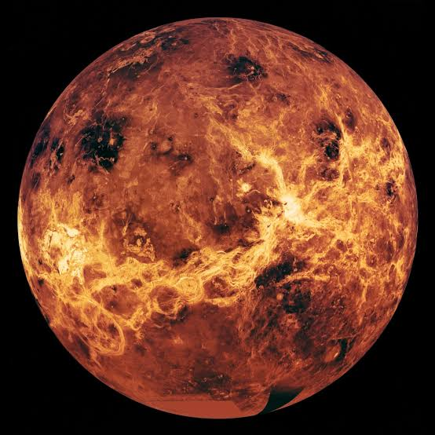
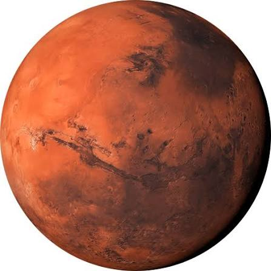
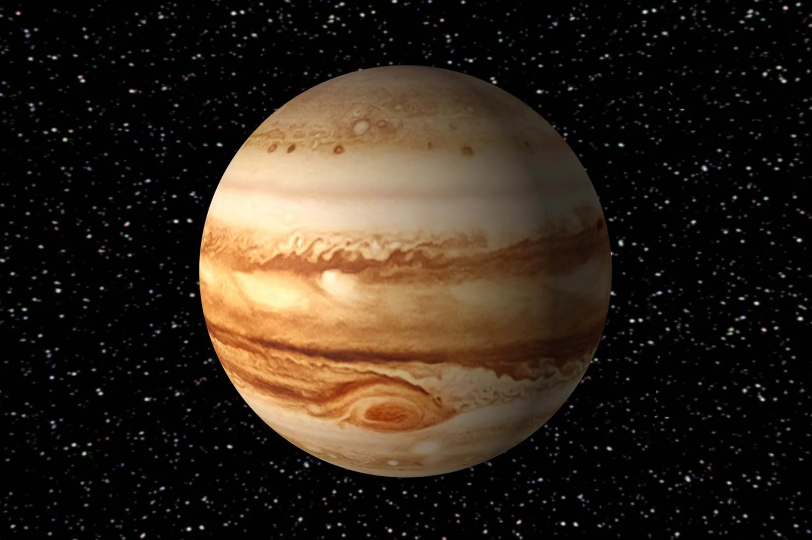
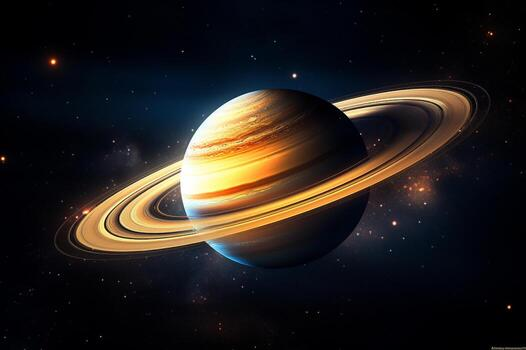
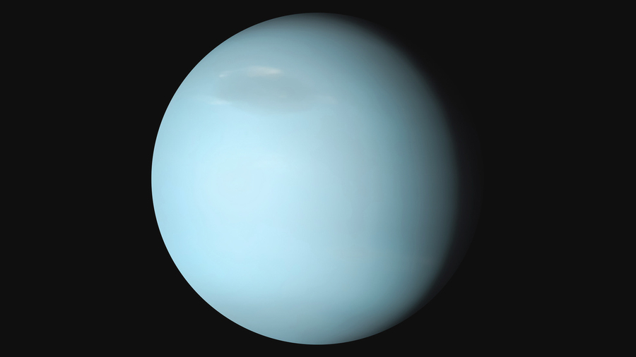
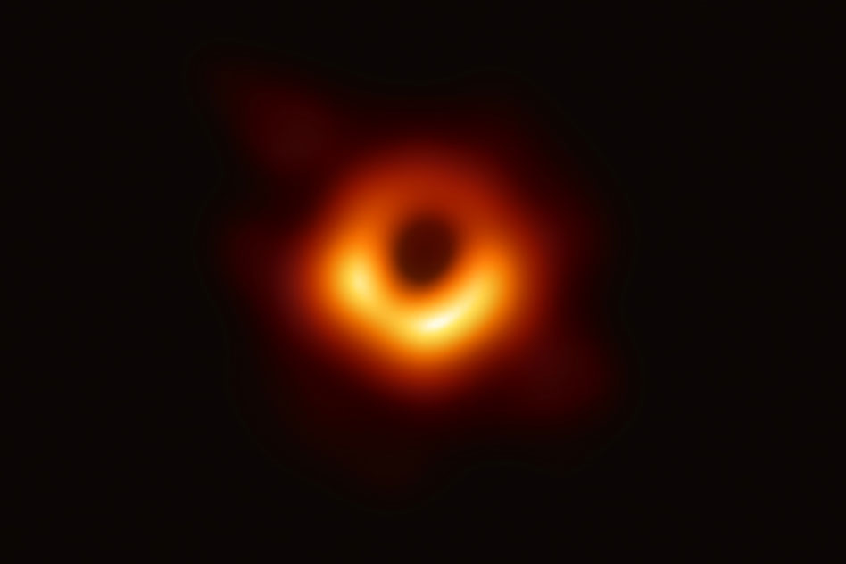

Surface temperatures swing wildly from 430°C on the side facing the Sun to -180°C on the dark side.
2.Oversized Core:
Its gigantic metallic core makes up about 75% of the planet's radius.
3.Ice at the Poles:
Deep, permanently shadowed craters at Mercury's poles hold hidden water ice.
Venus

1.Backward Spin:
Venus rotates in the opposite direction of most planets (retrograde rotation), meaning the Sun rises in the west.
2.Longer Than a Year:
One rotation on its axis takes 243 Earth days, while one orbit around the Sun takes only 225 Earth days.
3.Runaway Greenhouse:
Thick clouds of carbon dioxide trap heat, making it the hottest planet at 465°C.
Earth
1.Abundant Liquid Water:
It is the only known place in the universe where liquid water covers a large stable surface (about 71%).
2.Active Plate Tectonics:
Earth's crust is broken into moving plates that continually reshape the surface.
3.Protective Magnetic Field:
A strong core-generated magnetic field shields the planet from dangerous solar winds.
Mars

1.Tallest Volcano:
Mars hosts Olympus Mons, a shield volcano three times taller than Mount Everest.
2.The Red Rust:
Iron oxide dust covers the surface, giving Mars its distinct rusty red color.
3.Ancient Rivers:
Dry riverbeds and mineral data prove liquid water once flowed freely across early Mars.
Jupiter

1.Massive Giant:
Jupiter is the largest planet; twice as massive as all other planets combined.
2.The Great Red Spot:
A raging storm larger than Earth has whipped across its clouds for hundreds of years.
3.Ocean Moons:
Its moon Ganymede holds a subterranean saltwater ocean bigger than all of Earth's combined.
Saturn

1.Floating Gas Giant:
Saturn has the lowest density of any planet; if you could find a bathtub big enough, it would float in water.
2.Complex Ice Rings:
Its iconic ring system is made of billions of pieces of ice and rock ranging from tiny grains to mountain-sized chunks.
3.Moon Kingdom:
Saturn boasts the highest confirmed moon count in the solar system, with over 270 discovered.
Uranus
1.Rolling on Its Side:
An extreme axial tilt of 98 degrees means Uranus orbits the Sun practically sideways.
2.Extreme Seasons:
This sideways tilt causes 21-year-long periods of absolute dark winter and blazing summer at the poles.
3.Ice Giant Makeup:
It is classified as an ice giant, composed mostly of heavier fluids like water, ammonia, and methane above a small rocky core.
Neptune

1.Supersonic Winds:
Blasting at over 2,100 kilometers per hour, Neptune's winds are the fastest recorded anywhere in the solar system.
2.Deep Blue Methane:
Atmospheric methane absorbs red light and scatters blue light, giving the distant world its vivid azure tint.
3.Internal Heat:
Neptune radiates more internal energy than it receives from the distant Sun, driving its fierce weather systems.
black hole
This is a real black hole picture taken by nasa.

Fascinating Facts About Black Holes.
They are not cosmic vacuum cleaners: A black hole only sucks in things that get too close to its edge, known as the event horizon. If our Sun were replaced by a black hole of the same mass, Earth would not get pulled in; it would orbit normally because the gravitational pull at a distance remains the same.
They stretch things like spaghetti:
The intense gravitational pull at a black hole's center creates strong tidal forces. If you fell in feet first, the gravity pulling on your feet would be much stronger than the gravity pulling on your head, stretching you into a long, thin shape called "spaghettification".
Time slows down near them:
According to Einstein's theory of relativity, extreme mass warps space and time. If you hung out near a black hole's event horizon and then returned to Earth, you would find that much more time had passed for everyone else than for you.
They can spin incredibly fast:
Black holes rotate as they consume matter. Some spin at extreme speeds—the fastest known, like GRS 1915+105, rotate more than 1,000 times per second and drag surrounding space along with them.
The closest one is nearby (in cosmic terms):
The nearest known black hole to Earth is Gaia BH1, which sits about 1,500 light-years away in the constellation Monoceros.
They are freezing cold:
Despite heating up surrounding gas into glowing disks, the actual black hole singularity is mathematically near absolute zero in temperature.They slowly evaporate: Theoretical physics shows that black holes emit a faint thermal glow called Hawking radiation. Over unimaginable spans of time, this causes them to slowly lose mass and eventually vanish.
Quiz
1.what is the largest moon in our solar system?
titan
Ganymede
europa
triton
2.which planet has shortest day?
earth
saturn
Jupiter
neptune
3.what type of galaxy is milky way galaxy?
elliptical
irregular
spiral
barred spiral
4.what is the boundary around a blackhole beyond which light cannot escape called?
event horizon
photon belt
gravity wall
dark boundary
5.what is the nearest large galaxy to the milky way?